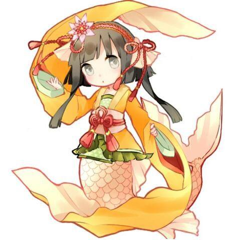

第三百八十四章 卖桐人妹子咯
今天，又是亚尔夫海姆大陆和平的一天。
虽然约顿海姆被冰霜所拥抱，然而，这片精灵之国却丝毫不受影响。
在美丽伟大的女王莉莉丝的治下，精灵们充满了活力。
无限之门的建立，这个世界会时不时迎来陌生的访客，同样，诞生于这个世界的精灵战士，也会飞入世界树顶端的门中造访无限的世界。
无论去往哪个世界，每个玩家总有自己的归宿，即使走的再远，离巢的鸟儿总有回来的一天。
前往其他假想世界，对于大部分ALO玩家来说，就如同出国旅行一样的感觉，虽然有些人不是很在意，但是还是有不少人对ALO有着相当强的归属。
于是……
“米娜桑，又是清爽的一天呢，今天大家也迈上星辰大海的征途了吗？”
著名特邀声优悠木碧声音充满活力的在天空中响起，同时，如同海市蜃楼一般的画面出现在天空中，那是一条在空中自由游动的人鱼的身影。
虽然ALO有许多精灵种族，但即使有水精灵这一种族，海域这块依旧是这个世界的空白，所以运营方推出了一个全新的种族——人鱼族供玩家选择，并且邀请了著名声优为其代言。
人鱼族推出的同时，原本水精灵的魔法受到了一定的削弱，深海区的话，只有人鱼族的玩家才能自由活动，在深水里自由活动的魔法如果不是人鱼族，那么就需要相当高的熟练度才能习得，亚丝娜几个曾经猜测过，这个是官方在为【北海巨妖克拉克】的讨伐任务所作出的安排。
奇幻世界，只有精灵的话，不是很寂寞吗？
“吼！”
“刚刚回来哦！”
“哨——就要去下一个世界了呢!鲤鱼酱！”
“一起去吧，鲤鱼酱……”
……
像是听到大地上的精灵们的回应一样，天空中的人鱼在等待了数秒后才充满活力的回应，“嗯嗯，辛苦了，米娜桑！随着无限之门的开放，越来越多是异世界的玩家造访我们的世界，同时，越来越多同伴也踏上了星海，在繁星多的世界里留下精灵之国的传说……”
事实上，在天空的海市蜃楼上还真有一行行的刷屏弹幕存在，那是全ALO玩家就本次话题的发言。
“我们亚尔夫海姆作为假想世界的起源，我们所培养的战士必然是最优秀的！其中红衣骑士团的诸位更是功不可没！黑玫瑰、凯特、巴尔姆克、奥尔加、克利姆，每一位所过之处，无不留下让人仰望的神话，而今天，我们相信，新的神话马上就要诞生！！！是谁呢？大家来猜猜看？”
“谁啊？”
“会是朔夜领主吗？”
“傻瓜，作为领主怎么可能随随便便离开ALO！”
“难道是风精灵的那个金发……的那个妹子吗？她可是”
“会不会是狂暴补师？一手绝强的剑技，一手好奶！”
“呀！好下流！”
“不不，我不是那个意思，我是说治疗，能打能回血，上次碰上她简直让人绝望啊！”
“我的话，觉得是火精灵的尤金将军，他的魔剑绝对无解！！”
“说什么呢，明明在第三代统一统一决斗大赛里被那个黑衣剑士打败了！而且，在其他世界，可没办法把魔剑带过去哦！”
“这样的话，也就是那个黑衣剑士咯！”
“不不不，我觉得应该是她，那个黑暗精灵的剑士，虽然因为时间到了HP少才被系统判定输给了黑衣剑士，但是那个小妹妹的攻击可是比黑衣剑士还有犀利哦！如果以HP耗尽为输赢标准的话，那个黑衣剑士可不一定能赢！”
“我……”
……
“哈哈哈~~~大家都在积极的猜测呢，虽然想要给你们提示，但是那位的状况让我很疑惑呢，难不成我发现了大秘密？”
摆出神秘的表情，在天空中有了一会儿，似乎是感觉差不多吸引了地面上的观众们的吸引力，人鱼像是开门似得推开手臂，一个巨幕在她的身前展开。
映入屏中的是盈盈一握不怎么大却不会出现在男性玩家身上的东西。
是女孩子？
这样的想法首先在ALO的诸位玩家的脑海里划过。
“哦！呀掰咦、呀掰咦、呀掰咦，这样会让我们的节目被禁播的！让我们放大视角！”
发出俏皮的笑声，镜头被拉开，然后露出的一个纤细的侧影，飘扬的黑发。
完全没有印象的造型，不过也是理所当然的，不同的游戏有不同的规则，通过无限之门后，被传输过去的只是玩家的能力参数数据，玩家的角色外观则是根据另一个游戏的规则自然生成的。
“女孩子呢，对吧，无论左看右看，都是女孩子不是吗？”人鱼小姐把巨屏里的人完全展现，呈多角度展现，“可是，在知道这位萌妹子的名字时，小鲤鱼混乱了呢！”
——【Kirito】
这个是最后显现出来的角色名字。
亚尔夫海姆各处的人群炸开了！
“这不是黑衣剑士的ID吗？”
“黑衣剑士不是男孩子？？？？”
“早就觉得那家伙看起来很娘气了！”
“太好了！桐人，不，是桐子酱呢！”
“那个游戏我听说有个M9000系列的角色就是伪娘造型的！”
“Yoyoyoyoyoyoyo!”
“yo个头啊，伪娘能有那个胸吗！”
“同名巧合的吧！”
“桐子！桐子！桐子！桐子！……”
“这样看的话，桐子酱和狂暴补师在一起的画面就没有那么刺眼了！”
“百合啊百合！”
“666666……”
“百合无限好，只是生不了！”
“就算生不了，百合还是好！”
“生不了个鬼，基佬是真的没办法生的，百合完全没问题！”
“对啊！对啊！前段时间阿美利加人不是说，蕾丝们想怀孕已经不需要*子库了！”
“23333！”
……
“虽然似乎新的ALO世界之迷被发现了，不过黑衣剑士的性别可不是这次报道的主题哦！”摇了摇手指，人鱼小姐将整个画面放大，“作为亚尔夫海姆的第一剑士，黑衣剑士在外的一举一动代表着我们精灵之国的国体，所以，在发现黑衣剑士前往GGO这个游戏之后，我们黎明报社就向运营方提出申请，对我们的最强剑士进行跟踪报道！感谢运营方的许可，并且提供我们一些秘密数据，就目前了解的情报来看……”在人鱼小姐的操控下，一个数据被放映出来，“米娜桑，这个是运营方透露的黑衣剑士的在线时长，虽然比不上一些重度玩家，但是也能够证明黑衣剑士是第一次玩GGO哦，到底是我们的第一剑士，第一次玩GGO就那么厉害！昨天才转移进去GGO就直接参赛了，并且还打入了决赛！特别是，让黑衣剑士打入决赛的可不是什么枪械技能哦，而是剑技！没错！大家都记得前几年上映的电影星球大战后传的内容吗？剑斩子弹！超~~厉害的人！”
说着，几个参赛录像被播放出来，那是黑发的较小少女在预选赛里的战斗画面！
又一波弹幕来袭，请注意防弹！
……
【昨天还差一点，但是想睡觉就去睡了……没办法，前天晚上睡的太晚，在蛇姬的书评区论战！就银河杀佩特拉这件事延伸的一系列问题在论战！论战后，我这边也要反思，月姬有没有哪里做的不好，避免之后再犯，省的有人拿月姬来堵我（手动滑稽）】